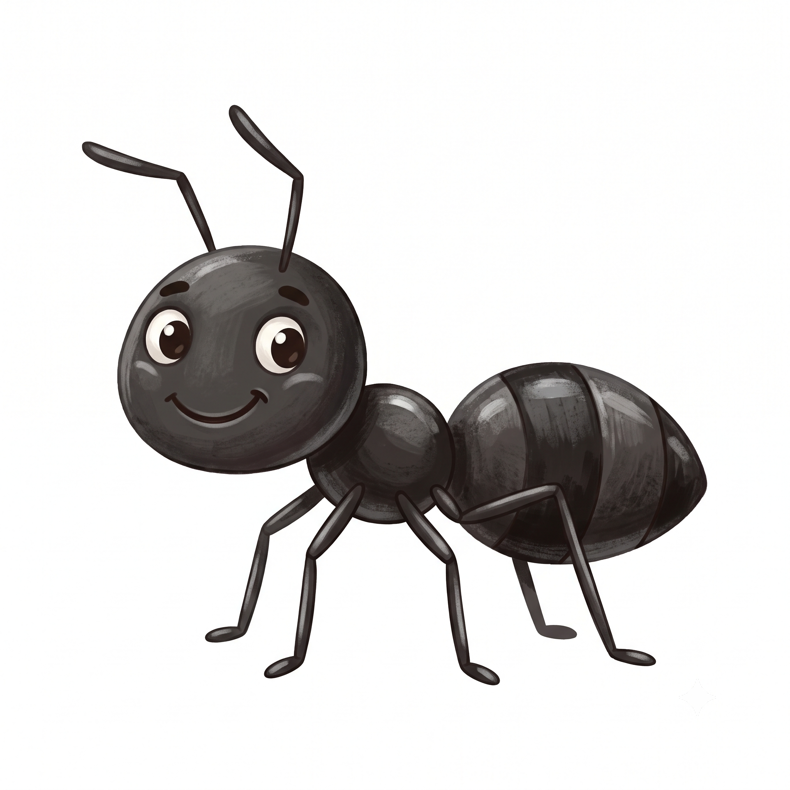
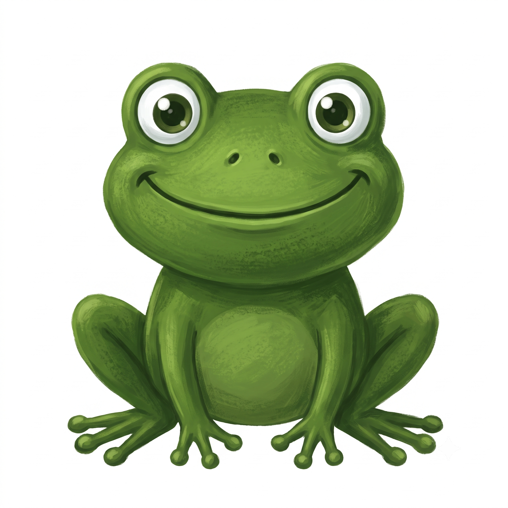

Eğlence · Çizgi Roman & Bilmeceler
Doğa Gülümser
Dedektiflik yorucu iş — biraz gülelim, biraz da kafa yoralım!
Dedektif Defne ve Küçük Arı
1
Dedektif Defne, çiçeğin içini büyütecle inceliyor…
2
Derken vızıldayan bir konuk gelir: bir arı!
3
Arı çiçekten çiçeğe uçarken poleni taşır…
4
Birkaç gün sonra: mis gibi domatesler! Teşekkürler arı!
Kim Olduğumu Bil Bakalım?
1

Minicik ama çok güçlüyüm; kendi ağırlığımın kat kat fazlasını taşırım.
2
Gece görürüm, başımı geriye çevirebilirim, "huu huu" öterim.
3

Zıp zıp zıplarım; hem suda hem karada yaşar, sinek yerim.
4
Bembeyaz kürküm var; buzların üstünde yaşarım.
Cevaplar
1. Karınca · 2. Baykuş · 3. Kurbağa · 4. Kutup ayısı
Günün Şakası
Öğretmen sormuş: "Arılar bal yapar, ya siz ne yaparsınız?" Küçük dedektif gülerek cevaplamış: "Biz de balı yeriz!"
Doğa Dedektifleri · Sayı 136